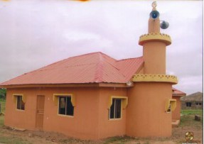

School Gallery


Reaching for the Peak
A centre of academic excellence, moral discipline, and leadership development.
Student Portal Teacher PortalCrescent Heights Oyo (CHO) is a reputable educational institution committed to providing quality education that combines academic excellence with moral discipline and character development.
Our curriculum promotes critical thinking, creativity, and a strong academic foundation.
We instill integrity, respect, discipline, and leadership values in every student.
A safe, supportive, and well-equipped learning environment for all.
We are delighted to welcome you to Crescent Heights Oyo (CHO), where we provide a well-rounded education that nurtures academic excellence, strong character, and a commitment to lifelong learning.
Our balanced curriculum fosters confidence, discipline, and critical thinking while upholding our core values of integrity and respect.
I invite you to explore our website to learn more about our programs and services. Thank you for considering Crescent Heights Oyo for your child’s education.
Ishak Sonde
School Principal